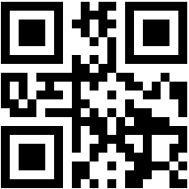

今回、自分でサイトを作って、「公開」するということを始めてした。サーバーを開いたり、サーバーを借りたり————そんな面倒くさいことをすることなく、簡単に公開できることを実感した。————このおかげで、久しぶりにプログラミングを楽しみことができた。また、あまり触れていなかった、サイトを作るために必要なHTMLやCSSの技術も、改めて学ぶことができた。あと、引用を 「斜め文字」 であらわすこととする。
さて、今回の自由研究のテーマは、「QRコードは人の手で読みとれるか」である。そもそも、QRコードは、どんな会社が作ったのだろうか。調べてみたところ、株式会社デンソーという会社が作ったそうだ。日本の会社で、自動車部品メーカーだそうだ。「QRコードがない時代、デンソーの製造工場の現場では部品をバーコードで管理していた。だが、部品管理のためにバーコードを10個ほど並べて読ませていたことから、非常に作業効率が悪かったことと、現場の作業員から『疲れる』との不平不満が挙がり、併せて『バーコードより多くの情報を盛り込めるコードを作って欲しい』という要望が出た。それに応えるため、デンソーウェーブ（開発当時はデンソー）開発部門に所属していた原 昌宏により1992年から新たなコードの開発がスタートした。原が昼休憩の時間中に社内で打っていた囲碁をヒントに、開発目標としてコードの情報量を増やすだけでなく『正確に速く読み取れること』、また、油などの汚れがつく自動車関連工場で使われることを想定し汚れや破損への強さにもこだわり、2年の開発期間を経て1994年に完成した。」そうだ。
QRリーダーは、数秒もかからずにQRコードを読み取るが、人の手で読み取るとなると、ものすごい時間がかかると思う。なぜなら（もちろん）コンピューターの方が計算は早いし、（人間にとっては）大変なUnicode[→1]コードからの変換も大変だと思うから。
1…コンピュータで入力できる文字のすべてを「Unicode」というもので管理をしていて、それぞれの文字にUnicodeコードというものが振り分けられている。
さて、実際に、QRコードを読み取ってみよう。Qiitaというプログラミング情報公開サイトで、「QRコードを人力で読み取る」ということをやってる人がいた。こんなことを考えたのは、ぼくだけではなかったようだ。さて、その人を参考にして、まずはQRコードを生成します。今回は「Science」をQRコードにした。その画像が、こちら。

このQRコードの、
赤い部分は、ファインダパターンといって、位置の基準になるもの。これにより反対から読んだりしても正確に読み取れるようになっている。位置を示すだけなので、読み込む際にはいらない情報だ。緑色の部分は、データ部と呼ばれていて、実際にURLなどの情報が入っている部分だ。それ以外のところは何なのかというと、「誤り訂正」をする場所で、データ部が汚れていたりしても、修正できるような情報が入っている。
QRコードには黒くなりすぎたり白くなりすぎたりしないように、マスクというものが施されている。マスクの種類は青色の部分に書かれている。白い部分を0、黒い部分を1として左から読んでいくと、「101」となるので、マスクの種類は「101」となる。マスクの種類の表を見てみよう。
| マスクの種類 | 色が反転する条件 |
|---|
| 000 | (i + j) % 2 = 0 |
|---|
| 001 | i % 2 = 0 |
|---|
| 010 | j % 3 = 0 |
|---|
| 011 | (i + j) % 3 = 0 |
|---|
| 100 | (i ÷ 2 + j ÷ 3) % 2 = 0 |
|---|
| 101 | (i × j) % 2 + (i × j) % 3 = 0 |
|---|
| 110 | ((i × j) % 3 + i × j) % 2 = 0 |
|---|
| 110 | ((i × j) % 3 + i + j) % 2 = 0 |
|---|
「〇 % 2」や「〇 % 3」の意味は、「〇を2や3で割ったときのあまり」を意味している。たとえば、「10 % 3 = 1」という具合だ。
と、いうことで。マスクを解く、ビフォー・アフターが、こちらです。